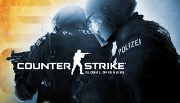

Interests
Playing video games
Badminton
Futsal
I have quite a few interests.
One of my favourite will be playing video games.
Playing video games tend to make me draw out intensity.
I used to be a semi-competitive gamer
But as I grew older, reaction and capability declines, so now I just play for fun.

Counter Strike is one of my favourite!
|
Goals
As a Information Technology student, I would like to be able to do Programming and GameMaking
As both of these fields are different, I like to challenge myself in trying new things.
Because I enjoy both of these fields. If there were a chance take up both
I'll be more than willingly to accept that offer, because it is my goal.
|